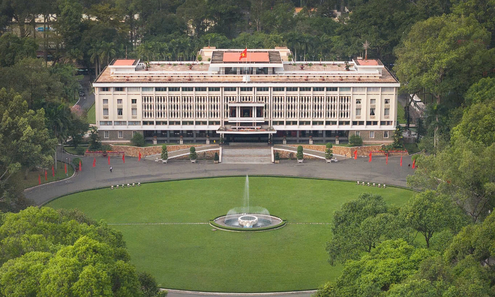
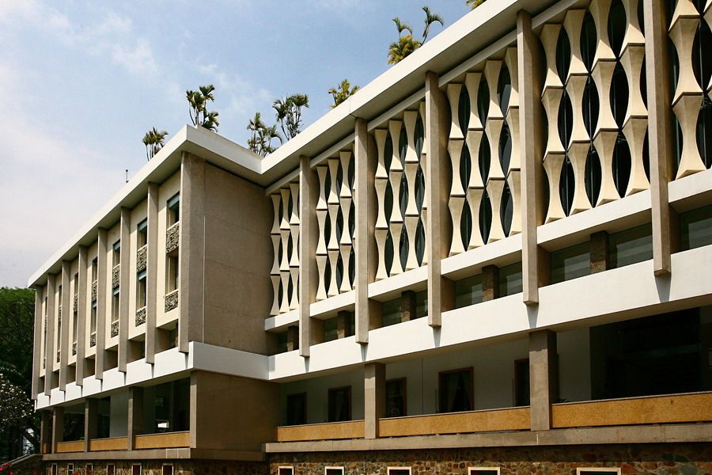
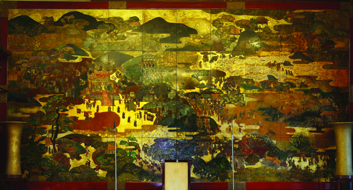

float: left-to-right

Dinh Độc Lập, chính thức được biết đến là Hội trường Thống Nhất kể từ năm 1975, tọa lạc uy nghi tại trung tâm
Thành phố Hồ Chí Minh, là một trong những công trình kiến trúc và di tích lịch sử quan trọng bậc nhất của Việt
Nam. Dinh được xây dựng trên nền đất của Dinh Norodom cũ, và công trình hiện tại được khởi công năm 1962, hoàn
thành năm 1966, dưới sự thiết kế tài hoa của Kiến trúc sư Ngô Viết Thụ – người Việt Nam đầu tiên đạt giải thưởng
Khôi nguyên La Mã. Với diện tích sử dụng lên tới $20.000m^2$ và hơn 100 căn phòng, Dinh Độc Lập không chỉ là nơi
làm việc và nơi ở của Tổng thống Việt Nam Cộng hòa trước đây mà còn là một tác phẩm kiến trúc mang tính triết lý
sâu sắc.
float: right-to-left

Kiến trúc của Dinh là sự giao hòa độc đáo giữa phong cách Hiện đại phương Tây và Triết lý kiến trúc Á Đông
truyền
thống. Kiến trúc sư Ngô Viết Thụ đã lồng ghép khéo léo các yếu tố phong thủy và Hán tự vào bố cục tổng thể. Khi
nhìn từ trên cao, toàn bộ mặt bằng của Dinh được cho là mang hình chữ "Cát" ($\text{吉}$) – biểu tượng của sự may
mắn, tốt lành. Mặt tiền Dinh nổi bật với hệ thống "rèm hoa đá" cách điệu từ hình ảnh đốt mành trúc quen thuộc
trong văn hóa Việt Nam, có tác dụng điều hòa ánh sáng và không khí tự nhiên, tạo nên vẻ thanh thoát và tinh tế.
Các chi tiết khác như hồ nước bán nguyệt trồng sen, súng, hay sự sắp xếp khối nhà hình chữ "Khẩu" ($\text{口}$)
và
hình chữ "Trung" ($\text{忠}$) đều mang những ý nghĩa về sự cẩn trọng, trung kiên và vững vàng.
clear

Tâm điểm nghệ thuật và văn hóa của Dinh Độc Lập chính
là bức tranh sơn mài khổng lồ mang tên "Bình Ngô Đại Cáo",
hiện được trưng bày trang trọng tại Phòng Trình Quốc Thư (tầng 2).
Tác phẩm này do Họa sĩ Nguyễn Văn Minh thực
hiện vào năm 1966, lấy cảm hứng từ áng "Thiên cổ hùng văn" của Nguyễn Trãi. Bức tranh có kích thước ấn tượng,
dài tới khoảng 14 mét và cao 9 mét, được ghép từ 40 tấm sơn mài nhỏ, tái hiện quang cảnh Đại Việt sau chiến
thắng quân Minh vào thế kỷ 15. Bức tranh mô tả cảnh vua Lê Lợi chủ trì lễ tuyên bố chiến thắng cùng với hình ảnh
sinh hoạt thanh bình của người dân, sử dụng kỹ thuật sơn mài truyền thống để toát lên niềm tự hào dân tộc và
khát vọng hòa bình trong độc lập. Ngoài ra, Dinh còn lưu giữ nhiều tác phẩm hội họa quý giá khác như bức tranh
sơn dầu gồm 7 tấm do chính Kiến trúc sư Ngô Viết Thụ vẽ tặng nhân dịp khánh thành Dinh, mang ý nghĩa "Non sông
gấm vóc, cỏ cây thái bình" ($\text{Cẩm tú sơn hà, thái bình thảo mộc}$), thể hiện sự hài hòa giữa con người và
thiên nhiên.